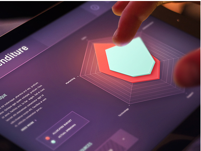
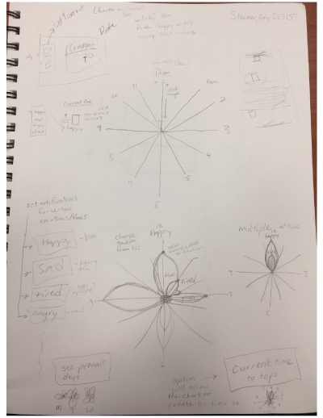

Feeling Flowers: Hourly Emotion Visualization
 
UPDATE: I changed my topic from natural resource history to a mobile application that allows users to chart their emotions hourly. I would like the application to have a similar aesthetic to the above image example. I like that the example has a vibrant,
3D, interface. I also like the bright colors and would like to coordinate them to each emotion. Instead of the rigid shapes I would like flower petals to appear for each emotion logged. See "Proposal Draft" tab on main portal page for more information
and functionality details.